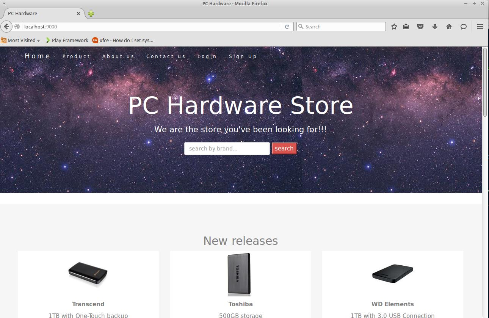
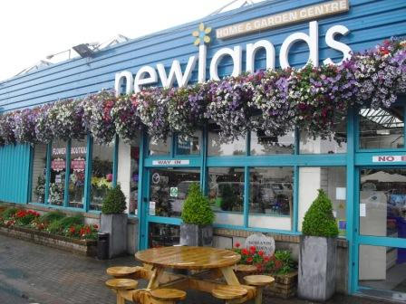
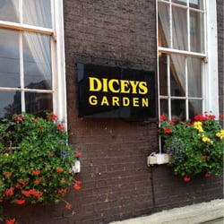
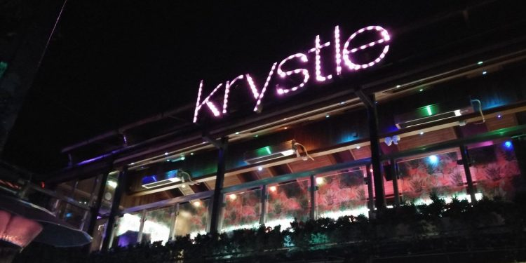
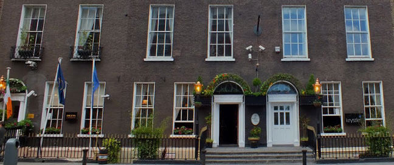

The most effective way to cope with change is to create it. I never stop doing my best just because someone doesn't give me credit.
I am a young fully motivated worker and learner, you will never find anyone as eager to learn and get hands on work like you would with me. I always know what to prioritise and if i am in doubt which is normal even to the smartest person on earth, i will ask. The one thing i will not do is a job incorrectly. I believe if its worth doing then it is worth doing well.
A few skill sets i have is being dsciplined, Any technical skills ranging from software all the way to fixing hardware problems or even advisiing. I am a very good consultant. I have good communication skills and very good time management skills. I am very open to the area/field i start working in.
I am a very active individual and i am usually up to play any sort of sport. Gym is like my second home and eating clean is what its all about for me.
Download my CV Here
2000 - 2009 St.Marks Primary School (Primary School)
2009 - 2014 St.Marks Community School (Secondary School)
2014 - 2018 Institute Of Technology Tallaght (College)
In college:
Ordinary Bachelors Degree in Computing.
Higher Bachelors Degree in Information Technology Management.
Check out the college website

Developed a Technology accessories selling website. We created an online website that allowed you to buy products just like you would on amazon. As a shopper you can make an account, login purchase goods, put in credit card details etc. As an admin you can add, delete and update products.
I developed a Bullet Hell style game, which was a mixture of two ideas, Space Invaders and Pokemon Platinum that was created for the Nintendo DS Lite. It is a fun and exciting game that we developed using JavaScript. It was a fun project to do and very long. The game has no heavy system requirements, just a web browser with internet connection.
For my final year project i am looking to make a data visualization of the EC2 instance spot prices. I plan to achieve this by web scraping Amazonx spot price website and then filtering the data using Ben Frys seven steps and to finally visualize it using D3 libraries for JavaScript
July 2014 - December 2014

In Newlands i was in charge of the nursery. This mean't i was in charge of bringing stock in, preparing deliveries, making sure there was always stock available in the garden and on the shop floors. I had to order in anyproducts that were going very low in stock or completly out of stock. I had a tough and significant role, i had to walk around the whole garden watering plants and making sure they were pruned and at its best to attract customers eyes. I was in charge of preparing for a congress which was a huge success where we had hundreds of plant enthusiants of come over from different countries to take a look at the garden centre because it had to be maintained at 5 star performance.
February 2015 - Present
I am currently working as a Brand Ambassador for HP through an agency known as McCurrach. In this job my main role is to promote HP and explain the difference between the HP device to another brand. Why is the HP device more expensive. I explain the features and what comes with HP devices as well as train the staff in the stor that i will be working in. This then helps me achieve personal targets along with store targets which then keep the store manager happy. I am a representative for HP, technically the face of HP in the store i will be working in for that day.
August 2017 - Present

I am also currently working as security for the security group known as BC Security in the Venues Dicey's Garden, Krystle, Bond Nightclub and the Russell Court Hotel which is all the one venue. My role here is to keep a safe environment for the patrons coming to the club to enjoy the night. I have the responsibilities of removing patrons that are a danger to others and themselves in the venue in a appropiate manner. This venue is one of the busiest venues in Europe. I ensure everyones safety at the venue, Floor staff, Customers, and even other memebers of security.